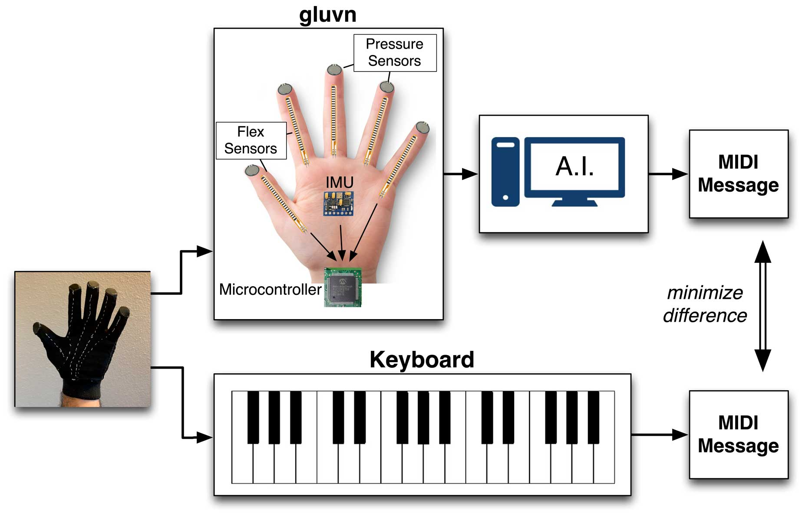

Intelligent musical interfaces
Designing novel musical instruments, both electronic and acoustic, and building interfaces that control generative AI parameters in real time. Attention to Arabic music's non-standard tuning systems and modal structures.